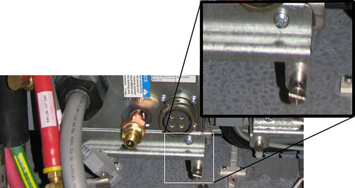
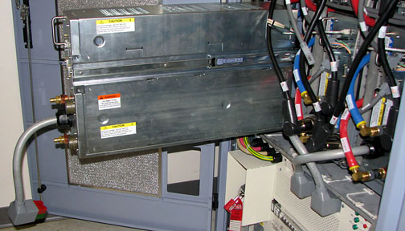
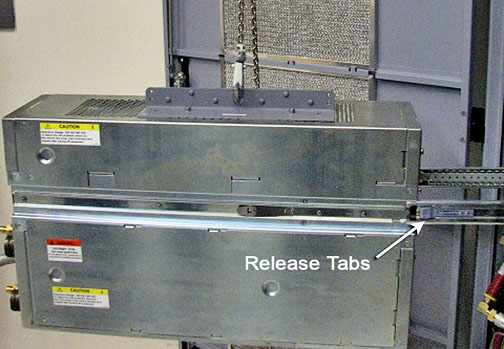

Operating Documentation
Direction 5670000, Rev# 1
Optima MR450w 1.5T Service Methods
Module Version 3.0, Version Date 7/16/08
Operating Documentation |
| Required Persons | Preliminary Reqs | Procedure | Finalization |
|---|---|---|---|
| 1 | 5 mins | 60 mins | 5 mins |
This procedure documents how to replace an eXtreme Gradient Power Supply (XPS) unit in the PGR cabinet. This unit is about 160 lbs. so the use of a hoist kit is required. This procedure details the correct way to use a hoist kit to remove the XPS unit and replace with the XPS field replaceable unit (FRU) safely.
| Item | Qty | Effectivity | Part# | Manufacturer | |
|---|---|---|---|---|---|
| Hoist Service Kit | 1 | - | 5196226 | - | |
| Non-Magnetic Tool Kit (or equivalent) | 1 | - | 5113258 | - | |
| Item | Qty | Effectivity | Part# | Manufacturer |
|---|---|---|---|---|
| Towels | N/A | - | - | - |
| Item | Qty | Effectivity | Part# | Manufacturer | |
|---|---|---|---|---|---|
| XPS unit | 1 | - | 5148804-2 | - | |
| ||||
| possible personal injury or equipment damage! | ||||
| the module could fall when using the lift tool. | ||||
| before putting weight on the hoist chain, be sure that the links are aligned properly. this will help keep the chain from binding up, or becoming kinked, which is nearly impossible to correct when the chain is under tension. |
| Condition | Reference | Effectivity |
|---|---|---|
The power in the cabinet needs to be off. Perform the Lockout/Tagout for PGR/PDU Gradient Subsystem before the XPS unit is replaced. | - | - |
Before disconnecting any cables on the front of the XPS unit, shut down the Power electronics PuMP (PPMP) at the Heat Exchange Cabinet (HEC) . Press ▲ F3 simultaneously to stop the pump. Then, switch the PPMP circuit breaker (CB) to OFF. | - | - |
Perform the LOTO for PGR/PDU Gradient Subsystem.
Before setting up the hoist kit, remove the XPS J9 connector to properly remove the main lifting beam (see Illustration 1).
Illustration 1: Lifting Beam and Connector in PGR Cabinet

Perform the Hoist Service Kit and Lifting Accessories procedure to set up and secure the hoist.
| NOTE: | Prior to the next step, prepare to absorb any leakage from the coolant lines with a towel in hand as the line is disconnected. |
Disconnect the cables and hoses from the front of the XPS unit (see Illustration 2). This includes the XPS to eXtreme Gradient Amplifier (XGA) power cables, the coolant lines, and the fiber optic cables.
| NOTE: | Do not bend the fiber optic loopback cables. These are very delicate cables and can break easily. |
Illustration 2: Front of XPS Unit - Cables Disconnected

Unscrew the four screws from the bottom module retaining bracket of the XPS unit (see Illustration 3). The bottom two screws are captive screws and will not fully detach from the bracket. Completely remove the module retaining bracket and set this aside as you will need this module retaining bracket for the FRU.
Illustration 3: Module Retaining Bracket

| NOTE: | If replacing the X-axis XPS, you may need to remove the PGR Cabinet door and lean it to the side of the cabinet. |
Carefully slide out the XPS unit. Slide out the unit until the top is completely exposed, but do not fully slide the unit out (see Illustration 4).
Illustration 4: Slide Out XPS Unit

Place the lifting bracket from the FRU crate (see Illustration 5) on top of the XPS (see Illustration 6). The attachment screws are stored on the bracket. Match the four openings and screw in the lifting bracket.
| NOTE: | The back two screw holes are slightly offset. Ensure the lifting bracket is placed correctly on top of the XPS unit so that the screws are completely intact. |
Illustration 5: Inside FRU Crate

Illustration 6: Lifting Bracket

Hook the winch from the hoist kit to the lifting bracket. Ratchet the winch to tighten the chain.
| NOTE: | Make sure the hook is seated in the lifting bracket. If not, the weight can shift causing harm to the equipment or the engineer. |
With the XPS unit being held by the slide rails and the hoist kit, it is now secure enough to extend the unit until the slide rails lock. Press the release tabs in on each side as you pull the unit out further (see Illustration 7).
Illustration 7: XPS Unit - Extended Out of Cabinet

Push the back end of the slide rail to unlatch the cabinet's slide rails from the XPS unit. After it is unlatched, release the cabinet slide rails and slide them into the cabinet (see Illustration 8). The cabinet rails are a reverse image of each other.
| NOTE: | You may want to use a screwdriver to unlatch the slide rail. |
Illustration 8: Slide Rail Latch Removal

The FRU is packaged in a wooden crate. Remove the top of the wooden crate and turn it on it's base. The XPS unit being removed can be placed into the top. Roll the top underneath the XPS unit. Lock the wheels so that the container does not move.
Illustration 9: FRU Package

Ratchet the winch to lower the XPS unit into the package (see Illustration 10).
Illustration 10: PGR Cabinet

Once lowered, unscrew side rails from both sides of the XPS unit (see Illustration 11).
Illustration 11: Slide Rails Removed

Remove the hook from the lifting bracket.
Unscrew the lifting bracket from the top of the unit. Roll the removed XPS unit to the side.
Remove the center section of the FRU crate and set aside. This is used to package the XPS unit being removed.
Bring the FRU to the front of the cabinet. Connect the slide rails to the FRU.
Screw the lifting bracket to the top of the new unit.
Hook the new XPS unit to the hoist kit.
| NOTE: | Make sure the hook is seated in the lifting bracket. If not, the weight can shift causing harm to the equipment or the engineer. |
Ratchet the winch to tighten the chains and begin lifting the unit. Slide out the rail a short amount to gauge how high to lift the new XPS unit. The slide rails of the XPS unit and cabinet must aligned for correct insertion.
When the slide rails are aligned, pull the slide rails out a short distance to get each side started. Once both of the slide rails are attached, pull the slide rails on to the FRU until you hear a click. This click is a signal that the unit is docked in the rails.
Ensure the XPS unit is secure on the rails and slightly loosen the chains with the winch to allow some liberty of movement. Press in both release tabs and begin to slide the XPS unit in until only the top of the unit is exposed.
Unhook the hoist kit from the lifting bracket. Remove the lifting bracket from the top of the new XPS unit.
| NOTE: | Place the lifting bracket into the XPS FRU crate with the four screws attached to the lifting bracket (see Illustration 5). |
Slide the XPS unit into the cabinet completely. Reattach the module retaining bracket.
Reconnect the cables to the new XPS unit.
The dual fiber optic loopback cable may be difficult to reinsert into the new XPS unit. Follow these steps if you are having difficulty connecting this cable.
Remove sleeve from the XPS unit.
Insert the dual fiber optic loopback cable into the sleeve by pushing the black section on the cable (see Illustration 12). You should feel the cable click in to the sleeve.
Illustration 12: Black Section on Dual Fiber Optic Loopback Cable

Insert the sleeve into the new XPS unit.
| NOTE: | If the cable is inserted backwards, it will not go in all the way. |
Disassemble the hoist kit. Return the main lifting beam to the PGR cabinet. Once the beam is secure, reconnect the XPS J9 connector. Return the support tube to the HEC.
Restore the power using the Lockout/Tagout for the PGR/PDU Gradient Subsystem
Turn on the PPMP CB at the HEC. Start the pump by pressing ▲ F3 simultaneously.
Remove coolant from the XPS unit using the manual coolant removal tool (see Coolant Draining).
Attach the center of the FRU package to the removed FRU unit base. Then attach the top of the FRU crate to prepare the FRU for return.